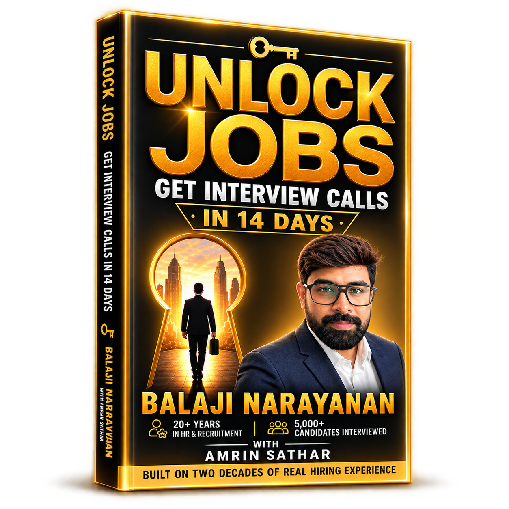

Written from the hiring side
Twenty years of reviewing resumes, shortlisting candidates and sitting across the table — turned into a step by step guide for the person on the other side.
Written from the other side of the hiring table
Unlock Jobs is a recruiter-side career playbook for Indian professionals who want to understand exactly how hiring works — and position themselves to be found, shortlisted and called.

Why this book is different
Twenty years of reviewing resumes, shortlisting candidates and sitting across the table — turned into a step by step guide for the person on the other side.
No generic pep talks. The exact resume, ATS, LinkedIn and outreach fixes that make recruiters stop scrolling and start calling.
Every chapter ends with something to do — not just something to know. Finish the book knowing exactly what to do on Monday morning.
What readers are saying
Read by professionals across IT, Finance, HR, Marketing, Operations and 15+ other industries across India
I finally understood why my resume was getting filtered before a human ever read it. Fixed my ATS formatting in one evening. Got a recruiter call three days later.
The LinkedIn changes alone got me three recruiter messages in a week. After six months of complete silence. I could not believe it was that simple.
This does not read like a career book. It reads like what a recruiter would tell you if they actually wanted to help you. That is exactly what it is.
What is inside
See the hiring system the way a recruiter sees it — as a funnel, not a form. After this you will never apply the same way again.
Positioning, ATS formatting and job description matching that puts your profile in front of the right people.
A profile recruiters actually find and message — built around how they search, not how you want to be seen.
Naukri, LinkedIn and beyond — how to make every platform work for you simultaneously.
Why your response rate is low and the exact scripts and strategies to fix it without sounding desperate.
Whether you are stuck inside your current role or coming back after a break — your visibility strategy starts here.
Prompts, tools and workflows that save hours and sharpen every application — used responsibly.
Convert every insight into specific daily action. No vague advice. Just a clear sequence of what to do next.
Real interview guidance from the other side of the table — what actually gets candidates hired in the room.
The action plan
This is not a promise of a job in 14 days. It is a complete clarity on what to do every single day to become better positioned and more discoverable.
Diagnose exactly why you are invisible. Resume, ATS, LinkedIn and portal audit.
Rewrite your resume and profile around what recruiters actually scan for.
Fix your LinkedIn and portal visibility so recruiters find you before you even apply.
Reach recruiters directly using the scripts, formulas and AI prompts inside.
Walk into interviews with recruiter-side insight and real confidence.
The people behind this book
A preview
This is not a summary. This is what the book actually looks like inside.
Chapter 01
Great candidates get filtered before anyone reads them. The gap is almost never your skill — it is that the system cannot see, understand or correctly position your value. Before we fix your resume or your profile you need to see hiring the way a recruiter sees it.
Page 12
Chapter 08
You should not finish this book thinking that was interesting. You should finish knowing exactly what to do on Monday morning. This chapter converts everything into fourteen days of specific sequenced action — audit, rebuild, amplify, outreach, prepare.
Page 104
The rest is yours to unlock
Get your copy
If this book does not help you think differently about your job search — reach out. We will make it right.
Unlock Jobs — Recruiter-Side Career Playbook
₹499 · One-time